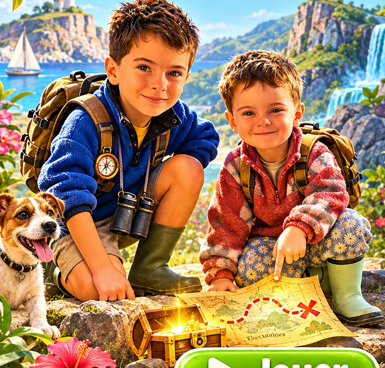

<!doctype html><html lang="fr"><head><meta charset="utf-8"><meta name="viewport" content="width=device-width, initial-scale=1, viewport-fit=cover"><meta name="theme-color" content="#f5b74a"><meta name="apple-mobile-web-app-capable" content="yes"><meta name="apple-mobile-web-app-status-bar-style" content="default"><meta name="apple-mobile-web-app-title" content="Angel & Joaquin"><meta name="description" content="Un monde d'aventures, recettes, construction et mini-jeux pour Angel et Joaquin."><link rel="manifest" href="manifest.webmanifest"><link rel="apple-touch-icon" href="assets/icon-192.png"><title>Les aventures d'Angel & Joaquin</title>
<style>
:root{font-family:ui-rounded,system-ui,-apple-system,'Arial Rounded MT Bold',Arial,sans-serif;color:#30405b;background:#fff7e7;font-synthesis:none}*{box-sizing:border-box}body{margin:0;background:radial-gradient(circle at 15% 2%,#fff6c6,transparent 35%),linear-gradient(#e7f8ff,#fff9eb 45%);min-height:100vh}button{font:inherit;cursor:pointer;-webkit-tap-highlight-color:transparent}button:focus-visible{outline:4px solid #276fc2;outline-offset:3px}#app{max-width:880px;margin:auto;padding:12px 14px 34px}.top{display:flex;align-items:center;justify-content:space-between;gap:10px;margin:5px 0 15px}.logo{display:flex;align-items:center;gap:9px;font-weight:900;color:#743c20;font-size:clamp(16px,3.5vw,23px)}.logo .brand{background:#fbe0a1;border:2px solid #deac5b;border-radius:14px;padding:8px 11px;box-shadow:0 4px 0 #d6b070}.pill{border:2px solid #d8dfee;background:white;border-radius:50px;padding:9px 13px;font-size:14px;font-weight:800;color:#4b617f}.hero{display:grid;grid-template-columns: 1fr .9fr;min-height:260px;background:linear-gradient(110deg,#d6f5ec,#def7ff 65%,#fff0c2);border:3px solid white;border-radius:28px;overflow:hidden;box-shadow:0 12px 35px #556f8220}.hero-copy{padding:28px 15px 22px 27px;display:flex;flex-direction:column;justify-content:center;gap:12px}.hero h1{font-size:clamp(27px,5.5vw,47px);line-height:1.08;margin:0;color:#8a4c28;text-wrap:balance}.hero p{font-size:clamp(14px,2.2vw,18px);margin:0;line-height:1.4}.hero img{width:100%;height:100%;object-fit:cover;object-position:46% 40%;max-height:360px}.primary{border:0;border-radius:15px;padding:14px 19px;background:linear-gradient(#80d850,#49aa32);color:white;font-size:17px;font-weight:900;box-shadow:0 5px 0 #307a25,0 8px 16px #0001;align-self:flex-start}.primary:active{transform:translateY(3px);box-shadow:0 2px 0 #307a25}.subtitle{text-align:center;font-size:22px;color:#7b4d2e;margin:26px 0 14px}.grid{display:grid;grid-template-columns:repeat(2,minmax(0,1fr));gap:14px}.mode{min-height:128px;display:flex;align-items:center;gap:16px;padding:19px;border:2px solid #ffffff;border-radius:22px;box-shadow:0 6px 13px #0000000d;text-align:left;color:#3d4661}.mode b{display:block;font-size:clamp(17px,3vw,22px)}.mode small{display:block;color:#4c6275;margin-top:7px;line-height:1.3;font-size:13px}.mode .em{font-size:43px;flex-shrink:0}.mode.one{background:#fff0bf}.mode.two{background:#ffe5d5}.mode.three{background:#e2f4d8}.mode.four{background:#e6e7ff}.mode.five{background:#e0f4fe}.mode.six{background:#ffe7f1}.back{border:2px solid #d8dfee;border-radius:13px;background:#fff;padding:10px 14px;font-weight:800;color:#42567b}.page-head{display:flex;gap:12px;align-items:center;margin:12px 0 16px}.page-head h1{font-size:clamp(22px,5vw,30px);margin:0;color:#784b2c}.card{background:#fff;border:2px solid #f4e4d5;border-radius:23px;padding:20px;box-shadow:0 7px 18px #60452c0b;margin:12px 0}.card h2{margin:0 0 10px;font-size:22px;color:#804f31}.tag{display:inline-block;background:#eaf5e7;border-radius:30px;padding:6px 11px;font-size:12px;color:#55784f;font-weight:800}.selection{display:flex;flex-wrap:wrap;gap:9px;margin:13px 0}.choice{border:2px solid #e0e7ee;border-radius:14px;background:white;padding:13px 16px;color:#394d6a;font-weight:800;min-height:48px}.choice.selected{border-color:#f2b650;background:#fff3c8}.choice.correct{background:#d5f5cb;border-color:#71b75d}.choice.wrong{background:#ffe2df;border-color:#e99d91}.muted{color:#698095;font-size:14px;line-height:1.55}.progress{height:12px;border-radius:20px;background:#f1e6d9;overflow:hidden;margin:10px 0 18px}.progress i{display:block;height:100%;background:linear-gradient(90deg,#78cb4f,#f6c957);border-radius:20px}.story{font-size:17px;line-height:1.6;background:#fff8e8;padding:15px;border-radius:14px;border-left:5px solid #e9bb60}.feedback{min-height:32px;font-weight:900;font-size:16px;color:#407a36;margin-top:12px}.avatar{border-radius:50%;width:43px;height:43px;background:#f6dcc1;display:inline-grid;place-items:center;font-size:25px}.level-list{display:grid;grid-template-columns:repeat(auto-fit,minmax(190px,1fr));gap:11px}.level{border:2px solid #e7dfcc;background:#fffaf1;border-radius:17px;padding:16px;text-align:left;color:#4c4e61}.level b{display:block;margin-bottom:7px}.level em{font-size:31px;font-style:normal}.sep{border:none;border-top:1px dashed #e4d7c4;margin:18px 0}.fridge{display:grid;grid-template-columns:repeat(4,minmax(0,1fr));gap:9px;background:#e9f7ff;border:3px solid #c5def1;border-radius:22px;padding:13px}.food{background:white;border:2px solid #cfe4f5;border-radius:16px;padding:10px 4px;min-height:83px;color:#3d576e;font-weight:800;font-size:12px}.food span{display:block;font-size:30px}.food.added{background:#dff5d5;border-color:#8bc575}.bowl{min-height:98px;background:#fff4d9;border:2px dashed #ddb66b;border-radius:20px;padding:13px;display:flex;flex-wrap:wrap;align-items:center;gap:10px}.tilegrid{display:grid;grid-template-columns:repeat(6,minmax(0,1fr));gap:4px;background:#e0efd3;border:7px solid #a7c58a;border-radius:15px;padding:6px;max-width:520px;margin:15px auto}.tile{aspect-ratio:1;background:#f9fff3;border:1px solid #c6d8ad;border-radius:7px;font-size:clamp(19px,4vw,32px);display:grid;place-items:center;padding:0}.tile:nth-child(2n){background:#f1f9e7}.tool{border:2px solid #e1e8cf;background:white;border-radius:15px;padding:11px;font-size:28px;min-width:55px}.tool.selected{background:#ffefbf;border-color:#e5b64b}.memory{display:grid;grid-template-columns:repeat(4,minmax(0,1fr));gap:9px;max-width:460px;margin:12px auto}.memory button{aspect-ratio:1;background:#d9e7ff;border:3px solid white;box-shadow:0 3px 0 #9caed4;border-radius:14px;font-size:clamp(28px,6vw,44px);color:#5777a5}.memory button.open{background:#fff8e2}.memory button.matched{background:#def8d8}.actionrow{display:flex;gap:10px;flex-wrap:wrap;align-items:center}.success{background:#e4f8d7;border:2px solid #abd493;border-radius:18px;padding:17px;font-weight:800;color:#42733c;text-align:center}.hint{background:#f1f5fd;border-radius:12px;padding:11px 14px;color:#566c88;font-size:13px;margin:12px 0}.reward{font-size:27px;background:#fff8dd;border:2px solid #f4dfad;border-radius:17px;padding:17px;display:flex;gap:11px;align-items:center;margin:8px 0}.reward small{display:block;color:#788397;font-size:12px}.footer{text-align:center;color:#8c989e;font-size:12px;padding:18px}.speak{border:0;background:#ebefff;color:#384d91;border-radius:11px;font-size:14px;padding:10px 12px;font-weight:800}.ingredients{color:#59725c;font-weight:700;font-size:14px}.steps{padding-left:26px}.steps li{margin:12px 0;line-height:1.5}.steps button{margin-left:8px}.note{font-size:12px;color:#7e6d66}.row{display:flex;gap:10px;flex-wrap:wrap}.row>*{min-width:0}@media(max-width:560px){#app{padding:8px 10px 28px}.hero{grid-template-columns:1fr .85fr;min-height:225px}.hero-copy{padding:18px 7px 16px 13px}.hero h1{font-size:25px}.hero p{font-size:13px}.hero img{object-position:47% 40%}.grid{gap:10px}.mode{min-height:117px;padding:10px;gap:9px;flex-direction:column;justify-content:center;text-align:center}.mode .em{font-size:36px}.mode b{font-size:15px}.mode small{font-size:11px;margin-top:4px}.card{padding:15px}.fridge{grid-template-columns:repeat(3,minmax(0,1fr))}.primary{padding:12px 15px;font-size:15px}.pill{font-size:11px}}
</style></head><body><div id="app"></div><script>
'use strict';
const KEY='angel-joaquin-game-v1';
let state;try{state=JSON.parse(localStorage.getItem(KEY))||{}}catch(e){state={}}
state.badges=state.badges||[];state.builds=state.builds||{};state.recipeDone=state.recipeDone||[];
const store=()=>{try{localStorage.setItem(KEY,JSON.stringify(state))}catch(e){}};
const app=document.querySelector('#app');let page='home',world=0,stage=0,chosen=null,notice='',recipe=0,fridgeAdded=[],cookingStep=0,buildType='maison',tool='🏡',board=[],cards=[],openCards=[],matched=[],lock=false,mini='memory',soundQuestion=0;
const adventures=[
{title:'L’île mystérieuse',emoji:'🏝️',intro:'Une carte magique vous mène à un trésor caché. Pour ouvrir le coffre, il faut réussir les épreuves des deux frères !',tasks:[
{who:'Angel',title:'Le message du pirate',text:'Le capitaine a caché son trésor à l’endroit où les vagues rencontrent le sable. Où faut-il chercher ?',options:['Dans la forêt','Sur la plage','Au sommet du volcan'],answer:1},
{who:'Joaquin',title:'Le coquillage magique',text:'Touche le SOLEIL jaune pour éclairer la plage !',options:['🌙','☀️','🌧️'],answer:1},
{who:'Angel',title:'Le code du coffre',text:'Sur la carte, il y a 8 pièces d’or. Le perroquet en emporte 3. Combien en reste-t-il ?',options:['4','5','6'],answer:1},
{who:'Joaquin',title:'La clé du trésor',text:'Choisis la clé pour ouvrir le coffre !',options:['🧸','🗝️','🍎'],answer:1}]},
{title:'La vallée des dinosaures',emoji:'🦖',intro:'Des œufs de dinosaures ont disparu. Il faut les retrouver avant le coucher du soleil !',tasks:[
{who:'Angel',title:'L’indice des empreintes',text:'Trois dinosaures ont laissé 4 empreintes chacun. Combien d’empreintes au total ?',options:['7','12','16'],answer:1},
{who:'Joaquin',title:'Retrouve l’œuf',text:'Quel objet est un œuf ?',options:['🪨','🥚','🌽'],answer:1},
{who:'Angel',title:'Le bébé dinosaure',text:'Trouve le mot correctement écrit.',options:['Dinausore','Dinosaure','Dinosore'],answer:1},
{who:'Joaquin',title:'La maman dinosaure',text:'Quel animal est un dinosaure ?',options:['🐠','🦕','🐱'],answer:1}]},
{title:'Le château enchanté',emoji:'🏰',intro:'Le pont du château est fermé ! Angel et Joaquin doivent réveiller la magie pour entrer.',tasks:[
{who:'Angel',title:'La porte secrète',text:'Je suis un nombre plus grand que 10, plus petit que 14 et impair. Qui suis-je ?',options:['11','12','14'],answer:0},
{who:'Joaquin',title:'La couleur du dragon',text:'Trouve le cœur rouge !',options:['💙','💚','❤️'],answer:2},
{who:'Angel',title:'La formule',text:'Choisis la bonne phrase.',options:['Le dragon dor.','Le dragon dort.','Le dragon dors.'],answer:1},
{who:'Joaquin',title:'La fête du roi',text:'Trouve la couronne !',options:['👑','🧦','🚗'],answer:0}]}];
const recipes=[
{name:'Gâteau au yaourt',emoji:'🍰',foods:['🥚','🥛','🌾','🍬','🫒'],extras:['Yaourt','Farine','Sucre','Œufs','Huile'],steps:['Préchauffer le four à 180 °C : un adulte s’en charge.','Verser 1 pot de yaourt dans un saladier.','Ajouter 2 pots de sucre et 3 pots de farine.','Ajouter 3 œufs et 1/2 pot d’huile, puis mélanger.','Verser dans un moule avec l’aide d’un adulte.','Un adulte enfourne pour environ 30 à 35 minutes et vérifie la cuisson.']},
{name:'Salade de fruits',emoji:'🍓',foods:['🍌','🍎','🍓','🍊'],extras:['Banane','Pomme','Fraises','Orange'],steps:['Laver soigneusement les fruits.','Un adulte découpe les fruits en petits morceaux adaptés à l’âge de Joaquin.','Verser les fruits dans un grand saladier.','Mélanger doucement avec une cuillère.','Servir la salade de fruits !']},
{name:'Mini-pizzas',emoji:'🍕',foods:['🍞','🍅','🧀','🫒'],extras:['Pâte à pizza','Tomate','Fromage','Olives'],steps:['Un adulte préchauffe le four à 200 °C.','Étaler la pâte sur une plaque.','Ajouter la sauce tomate avec une cuillère.','Parsemer de fromage et ajouter les garnitures.','Un adulte enfourne environ 12 à 15 minutes et vérifie la cuisson.']}];
const allfoods=['🥚','🥛','🌾','🍬','🫒','🍌','🍎','🍓','🍊','🍞','🍅','🧀','🥕','🥔','🥦','🍯','🍫','🍇'];
const foodnames={'🥚':'Œufs','🥛':'Yaourt / lait','🌾':'Farine','🍬':'Sucre','🫒':'Huile / olives','🍌':'Banane','🍎':'Pomme','🍓':'Fraises','🍊':'Orange','🍞':'Pâte','🍅':'Tomate','🧀':'Fromage','🥕':'Carotte','🥔':'Pomme de terre','🥦':'Brocoli','🍯':'Miel','🍫':'Chocolat','🍇':'Raisin'};
const buildsets={maison:['🏡','🚪','🪟','🪑','🛏️','🌳','🌷','🪴','🐕','🚗','🧱','🧹'],jardin:['🌳','🌲','🌼','🌻','🌹','🪴','🦋','🐰','🐝','🌈','⛲','🪨'],espace:['🚀','🌙','⭐','🪐','🛸','👽','☄️','🛰️','🌍','🤖','🔭','✨']};
const esc=s=>String(s).replace(/[&<>"']/g,c=>({'&':'&amp;','<':'&lt;','>':'&gt;','"':'&quot;',"'":'&#39;'}[c]));
function speak(s){if(!('speechSynthesis'in window)){notice='La lecture vocale n’est pas disponible ici.';render();return}window.speechSynthesis.cancel();let msg=new SpeechSynthesisUtterance(s);msg.lang='fr-FR';msg.rate=.87;window.speechSynthesis.speak(msg)}
function header(){return `<header class="top"><div class="logo"><span>🧭</span><span class="brand">ANGEL & JOAQUIN</span></div><span class="pill">🏆 ${state.badges.length} trésor${state.badges.length>1?'s':''}</span></header>`}
function head(t){return `<div class="page-head"><button class="back" data-act="home">← Accueil</button><h1>${t}</h1></div>`}
function home(){return `${header()}<section class="hero"><div class="hero-copy"><h1>Les aventures<br>d’Angel & Joaquin</h1><p>Deux frères, mille découvertes !</p><button class="primary" data-act="adventures">▶ Jouer</button></div></section><h2 class="subtitle">Choisis ton aventure ✨</h2><div class="grid"><button class="mode one" data-act="adventures"><span class="em">🗺️</span><span><b>Aventures & énigmes</b><small>Résoudre des mystères ensemble</small></span></button><button class="mode two" data-act="kitchen"><span class="em">👩‍🍳</span><span><b>Cuisine & recettes</b><small>Un frigo rempli d'ingrédients !</small></span></button><button class="mode three" data-act="build"><span class="em">🧱</span><span><b>Construis & crée</b><small>Maison, jardin ou planète</small></span></button><button class="mode four" data-act="mini"><span class="em">🎮</span><span><b>Mini-jeux</b><small>Mémoire, animaux et découvertes</small></span></button><button class="mode five" data-act="discover"><span class="em">📖</span><span><b>Mes découvertes</b><small>Le livre de nos recettes</small></span></button><button class="mode six" data-act="rewards"><span class="em">🏆</span><span><b>Mes trésors</b><small>Vos belles réussites</small></span></button></div><p class="footer">Sans publicité • Pas de compte • Pour jouer ensemble ❤️</p>`}
function adventuresView(){return `${header()}${head('🗺️ Les aventures')}<div class="card"><h2>Le livre magique 📖</h2><p class="muted">Angel et Joaquin réussissent chacun leurs défis pour faire avancer l’histoire. Chacun son tour !</p><div class="level-list">${adventures.map((a,i)=>`<button class="level" data-world="${i}"><em>${a.emoji}</em><b>${a.title}</b><span class="tag">${state.badges.includes('av'+i)?'✅ Aventure réussie':'4 défis à découvrir'}</span></button>`).join('')}</div></div>`}
function gameView(){const a=adventures[world],q=a.tasks[stage];if(stage>=a.tasks.length)return `${header()}${head(a.title)}<div class="card" style="text-align:center"><div style="font-size:76px">🎉🏆🎉</div><h2>Bravo, Angel et Joaquin !</h2><p>Vous avez réussi ensemble : ${a.title} !</p><p class="muted">Votre trésor est dans l’album des récompenses.</p><button class="primary" data-act="adventures">Choisir une autre aventure →</button></div>`;return `${header()}${head(a.emoji+' '+a.title)}<div class="card"><span class="tag">Étape ${stage+1} / ${a.tasks.length}</span><div class="progress"><i style="width:${stage/a.tasks.length*100}%"></i></div>${stage===0?`<p class="story">${a.intro}</p>`:''}<div class="actionrow"><span class="avatar">${q.who==='Angel'?'🧑':'👶'}</span><h2 style="margin:0">À toi, ${q.who} !</h2></div><h2 style="margin-top:16px">${q.title}</h2><p class="story">${q.text}</p><button class="speak" data-speak="${esc(q.text)}">🔊 Écouter la consigne</button><div class="selection">${q.options.map((opt,i)=>`<button class="choice ${chosen===i?(i===q.answer?'correct':'wrong'):''}" data-answer="${i}">${esc(opt)}</button>`).join('')}</div><div class="feedback" role="status">${notice}</div>${chosen===q.answer?`<button class="primary" data-act="next">Bravo ! Étape suivante →</button>`:''}</div>`}
function kitchenView(){const r=recipes[recipe],complete=r.foods.every(x=>fridgeAdded.includes(x));return `${header()}${head('👩‍🍳 La cuisine magique')}<div class="card"><h2>Choisis une recette</h2><div class="selection">${recipes.map((x,i)=>`<button class="choice ${recipe===i?'selected':''}" data-recipe="${i}">${x.emoji} ${x.name}</button>`).join('')}</div><h2>🧊 Ouvre le frigo !</h2><p class="muted">Angel lit les ingrédients. Joaquin touche les aliments pour les mettre dans le saladier.</p><p class="ingredients">Pour ${r.name} : ${r.extras.join(' • ')}</p><div class="fridge">${allfoods.map(f=>`<button class="food ${fridgeAdded.includes(f)?'added':''}" data-food="${f}"><span>${f}</span>${foodnames[f]}</button>`).join('')}</div><h2 style="margin-top:22px">🥣 Notre saladier</h2><div class="bowl">${fridgeAdded.length?fridgeAdded.map(f=>`<span style="font-size:31px">${f}</span>`).join(''):'<span class="muted">Le saladier est vide… Choisissez vos ingrédients !</span>'}</div><p class="muted">Les ingrédients sélectionnés sont illustratifs : la liste et les quantités de la recette font foi.</p><div class="actionrow"><button class="choice" data-act="emptyBowl">🧹 Vider le saladier</button>${complete?`<button class="primary" data-act="recipeSteps">📖 Suivre la recette →</button>`:''}</div><div class="feedback" role="status">${notice}</div></div>`}
function recipeStepsView(){const r=recipes[recipe],done=state.recipeDone.includes(recipe);return `${header()}${head('📖 '+r.name)}<div class="card"><span class="tag">Cuisine réelle • Avec un adulte</span><h2>On prépare ${r.name} ${r.emoji}</h2><div class="hint">⚠️ Un adulte utilise le couteau, le four et les appareils chauds. Joaquin peut verser et mélanger avec surveillance.</div><ol class="steps">${r.steps.map((s,i)=>`<li style="opacity:${i<cookingStep?.55:1}">${s} ${i===cookingStep?`<button class="choice" data-act="cookNext">✓ C'est fait</button>`:i<cookingStep?'✅':''}</li>`).join('')}</ol>${cookingStep>=r.steps.length?`<div class="success">🎉 Vous avez terminé ! ${done?'Recette déjà enregistrée.':'La recette est ajoutée au livre des découvertes.'}</div><button class="primary" data-act="discover">📖 Notre livre →</button>`:''}<button class="speak" data-speak="${esc(r.steps[Math.min(cookingStep,r.steps.length-1)])}">🔊 Lire l’étape</button></div>`}
function resetBoard(){board=[...Array(30)].map(()=> ''); if(state.builds[buildType])board=state.builds[buildType].slice();tool=buildsets[buildType][0]}
function buildView(){return `${header()}${head('🧱 Construis & crée')}<div class="card"><h2>Ton monde, tes idées !</h2><p class="muted">Choisis un décor, puis un objet et touche une case pour le placer. Tu peux créer autant que tu veux !</p><div class="selection">${[['maison','🏡 Maison'],['jardin','🌻 Jardin'],['espace','🚀 Espace']].map(([k,n])=>`<button class="choice ${buildType===k?'selected':''}" data-build="${k}">${n}</button>`).join('')}</div><h2>Choisis un objet</h2><div class="selection">${buildsets[buildType].map(t=>`<button aria-label="Placer ${t}" class="tool ${tool===t?'selected':''}" data-tool="${t}">${t}</button>`).join('')}<button class="tool ${tool==='X'?'selected':''}" data-tool="X" aria-label="Gomme">🧽</button></div><div class="tilegrid" aria-label="Grille de construction">${board.map((x,i)=>`<button class="tile" data-cell="${i}" aria-label="Case ${i+1}">${x}</button>`).join('')}</div><div class="actionrow"><button class="choice" data-act="clearBuild">🧹 Tout effacer</button><span class="tag">💾 Création sauvegardée automatiquement</span></div></div>`}
function setupMemory(){const sym=['🦕','🦋','🌈','🚀'];cards=[...sym,...sym].map((v,i)=>({id:i,v})).sort(()=>Math.random()-.5);openCards=[];matched=[];lock=false}
const animalQ=[{q:'Quel animal fait « miaou » ?',answers:['🐶','🐱','🐸'],correct:1},{q:'Quel animal peut voler ?',answers:['🐟','🐘','🦜'],correct:2},{q:'Quel animal fait « meuh » ?',answers:['🐄','🦊','🐢'],correct:0},{q:'Quel animal vit dans la mer ?',answers:['🐇','🦈','🐓'],correct:1}];
function miniView(){return `${header()}${head('🎮 Les mini-jeux')}<div class="card"><div class="selection"><button class="choice ${mini==='memory'?'selected':''}" data-mini="memory">🧠 Memory</button><button class="choice ${mini==='animals'?'selected':''}" data-mini="animals">🐾 Les animaux</button></div>${mini==='memory'?`<h2>Retrouve les paires !</h2><p class="muted">Retourne deux cartes identiques. Tu peux jouer seul ou à deux.</p><div class="memory">${cards.map((x,i)=>`<button data-card="${i}" class="${matched.includes(i)?'matched':openCards.includes(i)?'open':''}" ${matched.includes(i)?'disabled':''}>${matched.includes(i)||openCards.includes(i)?x.v:'❔'}</button>`).join('')}</div>${matched.length===cards.length?'<div class="success">🎉 Super mémoire ! Toutes les paires sont trouvées !</div>':''}<button class="choice" data-act="resetMemory">🔄 Recommencer</button>`:`<h2>Qui est cet animal ?</h2><p class="story">${animalQ[soundQuestion%animalQ.length].q}</p><button class="speak" data-speak="${esc(animalQ[soundQuestion%animalQ.length].q)}">🔊 Écouter</button><div class="selection">${animalQ[soundQuestion%animalQ.length].answers.map((x,i)=>`<button class="choice" style="font-size:35px" data-animal="${i}">${x}</button>`).join('')}</div><div class="feedback">${notice}</div>`}</div>`}
function discoverView(){return `${header()}${head('📖 Mes découvertes')}<div class="card"><h2>Notre livre de recettes 👩‍🍳</h2><p class="muted">Les recettes que vous avez réalisées ensemble se retrouvent ici.</p>${state.recipeDone.length?state.recipeDone.map(i=>`<button class="level" data-recipe-book="${i}" style="margin:8px;width:100%;display:block;text-align:left">${recipes[i].emoji} ${recipes[i].name} <span class="tag">Revoir la recette</span></button>`).join(''):'<div class="hint">Le livre est encore vide. Préparons notre première recette !</div>'}<button class="primary" data-act="kitchen">🧊 Aller dans la cuisine</button></div>`}
function rewardsView(){return `${header()}${head('🏆 Mes trésors')}<div class="card"><h2>Vos aventures réussies</h2>${state.badges.length?state.badges.map(k=>{const i=+k.slice(2);return `<div class="reward">${adventures[i]?.emoji||'🌟'}<span><b>${adventures[i]?.title||'Une aventure'}</b><small>Réussie ensemble !</small></span>🏆</div>`}).join(''):'<p class="muted">Pas encore de trésor ! La première aventure vous attend.</p>'}<button class="primary" data-act="adventures">🗺️ Partir à l'aventure</button></div><div class="card"><h2>Nos constructions</h2><p class="muted">Vos mondes sont conservés sur ce téléphone : maison, jardin et espace.</p><button class="choice" data-act="build">🧱 Construire</button></div>`}
function render(){app.innerHTML=({home,adventures:adventuresView,game:gameView,kitchen:kitchenView,recipeSteps:recipeStepsView,build:buildView,mini:miniView,discover:discoverView,rewards:rewardsView}[page]||home)()}
function nav(p){page=p;chosen=null;notice='';if(p==='build'&&!board.length)resetBoard();if(p==='mini'&&!cards.length)setupMemory();render();window.scrollTo({top:0,behavior:'instant'})}
app.addEventListener('click',e=>{const el=e.target.closest('button');if(!el)return;
if(el.dataset.speak){speak(el.dataset.speak);return}
if(el.dataset.world!==undefined){world=+el.dataset.world;stage=0;nav('game');return}
if(el.dataset.answer!==undefined){const a=adventures[world].tasks[stage];chosen=+el.dataset.answer;notice=chosen===a.answer?'✨ Bravo ! Vous avez trouvé !':'Essaie encore, tu peux y arriver 🌷';render();return}
if(el.dataset.recipe!==undefined){recipe=+el.dataset.recipe;fridgeAdded=[];cookingStep=0;notice='';render();return}
if(el.dataset.food){const f=el.dataset.food;fridgeAdded.includes(f)?fridgeAdded=fridgeAdded.filter(x=>x!==f):fridgeAdded.push(f);notice=recipes[recipe].foods.every(x=>fridgeAdded.includes(x))?'Bravo, tous les ingrédients sont dans le saladier ! 🍽️':'';render();return}
if(el.dataset.build){buildType=el.dataset.build;resetBoard();render();return}
if(el.dataset.tool){tool=el.dataset.tool;render();return}
if(el.dataset.cell!==undefined){board[+el.dataset.cell]=tool==='X'?'':tool;state.builds[buildType]=board.slice();store();render();return}
if(el.dataset.mini){mini=el.dataset.mini;notice='';if(mini==='memory')setupMemory();render();return}
if(el.dataset.card!==undefined){const i=+el.dataset.card;if(lock||matched.includes(i)||openCards.includes(i)||openCards.length>=2)return;openCards.push(i);if(openCards.length===2){const[a,b]=openCards;if(cards[a].v===cards[b].v){matched.push(a,b);openCards=[]}else{lock=true;setTimeout(()=>{openCards=[];lock=false;if(page==='mini')render()},700)}}render();return}
if(el.dataset.animal!==undefined){let q=animalQ[soundQuestion%animalQ.length];if(+el.dataset.animal===q.correct){soundQuestion++;notice='';render();if(soundQuestion%animalQ.length===0){notice='🎉 Bravo ! Tu connais tous ces animaux !';render()}}else{notice='Pas tout à fait ! Essaie encore 🌷';render()}return}
if(el.dataset.recipeBook!==undefined){recipe=+el.dataset.recipeBook;cookingStep=0;nav('recipeSteps');return}
let act=el.dataset.act;if(!act)return;
if(['home','adventures','kitchen','build','mini','discover','rewards'].includes(act)){nav(act);return}
if(act==='next'){stage++;chosen=null;notice='';if(stage>=adventures[world].tasks.length&&!state.badges.includes('av'+world)){state.badges.push('av'+world);store()}render();return}
if(act==='emptyBowl'){fridgeAdded=[];notice='';render();return}
if(act==='recipeSteps'){cookingStep=0;nav('recipeSteps');return}
if(act==='cookNext'){cookingStep++;if(cookingStep>=recipes[recipe].steps.length&&!state.recipeDone.includes(recipe)){state.recipeDone.push(recipe);store()}render();return}
if(act==='clearBuild'){board=Array(30).fill('');state.builds[buildType]=board.slice();store();render();return}
if(act==='resetMemory'){setupMemory();render();return}
});
render();if('serviceWorker'in navigator&&location.protocol==='https:')navigator.serviceWorker.register('./service-worker.js').catch(()=>{});
</script></body></html>
